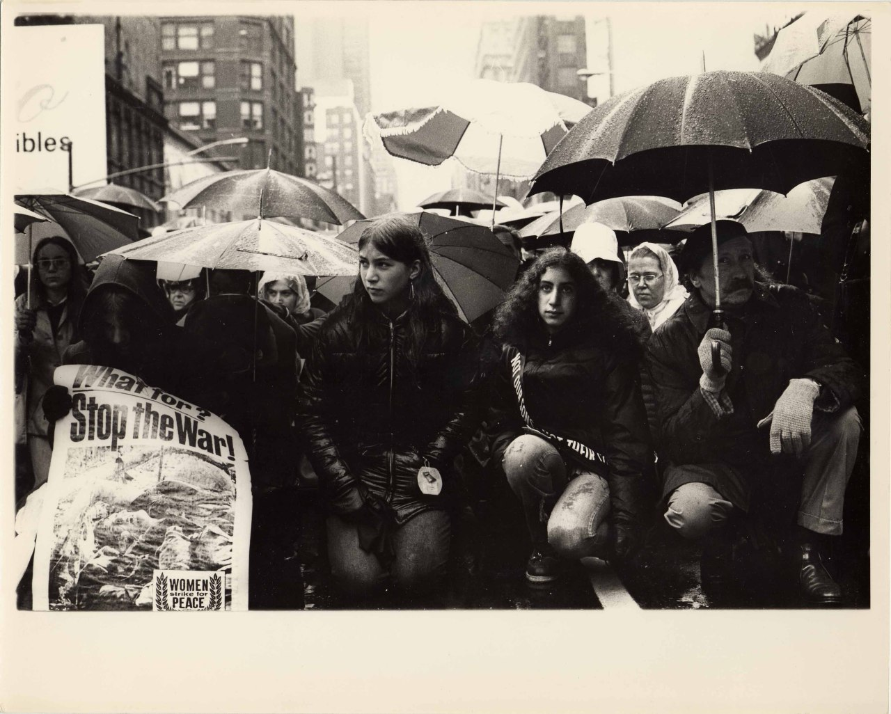
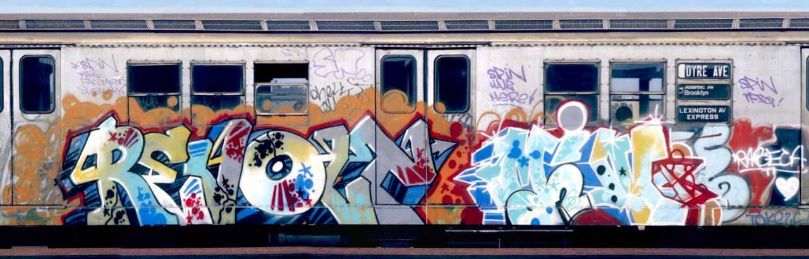
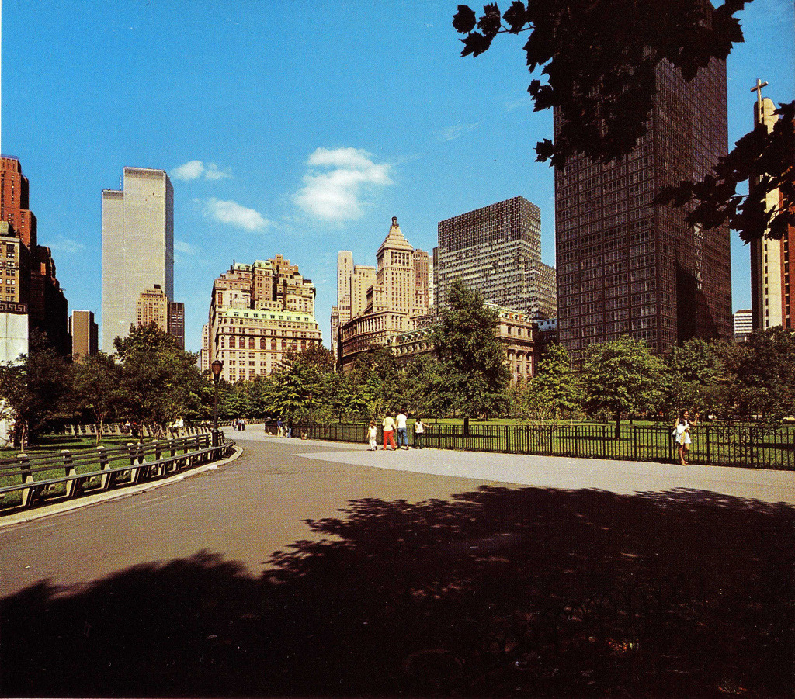
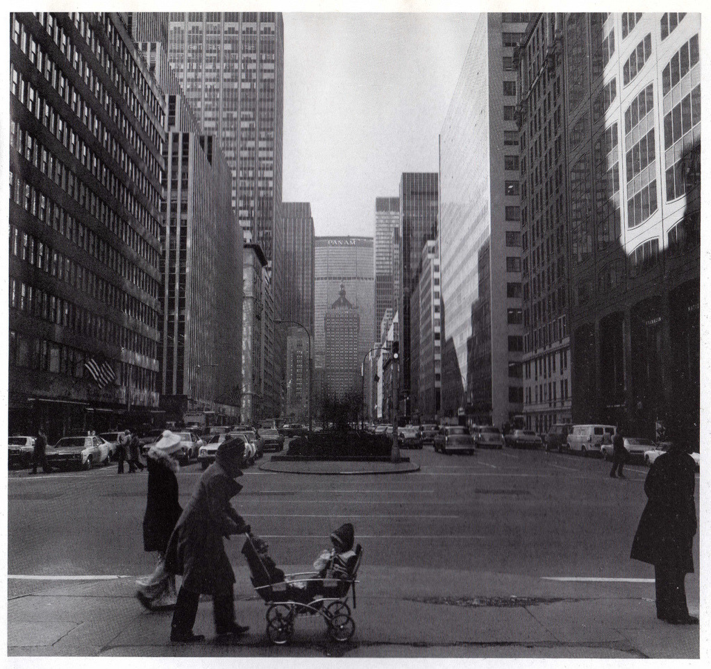

Smiling in the rubble. South Bronx, 1970s.
Smiling in the rubble. South Bronx, 1970s.

Times Square shuttle, 1973. Graffiti in its early days.
Richard Sandler
Subway Noir. New york City (1985)

Train (not subway) tunnel under Riverside Park, 1990s.

A strolling blind musician plays guitar and harmonica along Broadway at night in Times Square. New York, 1944.
By Peter Stackpole

Thelonious Monk, Howard McGhee, Roy Eldridge, and Teddy Hill, Minton’s Playhouse, New York, Sept. 1947.

Broadway and 89th in 1977. The New Yorker Theater’s marquis is on the left. The red sign on the corner is Party Cake, the world’s best bakery.

Times Square 1972

Peace march in NYC, 1972.

23rd and 5th, 1974.

Broadway and West 49th Street

On Broadway, looking towards Houston, 1975.

E. 100th Street, 1966.
“The cheapest grocery store in prices.”

74th and Broadway in the early 70s.

Amsterdam Ave and 90th Street, in the 1970s. Fuck yeah.

Times Square, 1985. Untouched by Disney.

1973, the graffiti era begins.

A clean car in 1972, pre-graffiti-era.

Gimbel’s 1971. 86th and Lex. Filled with moms buying really ugly clothes for their kids.

Delancey and Norfolk, early 70s. Love the old NYTA logo!

Hotel. Harlem, 1986.
96th and Lex, 1983

Broadway and 88th Street, 1970.

Breakin’ on Broadway and 95th Street.

Revolt / Min, early 1980s

Tags, tags, tags. 1984.
Bus 129 (by Dondi). 1984.

Summertime and the livin’ is easy. Central Park, 1970.

Greenwich Village in NYC, 1971 (via)

Hotel Park Plaza, 1970s.
I don’t remember this place, but it looks an awful lot like 86th Street between West End and Riverside.

Hey baby. 1970s leering, NYC.

NYC taxi, 1980

NYC taxi, 1971
NYC taxi, 1957

Getting married in Washington Heights, 1971.
You crazy, beautiful strangers. Rock on.

Battery Park, 1975.
by Morris Engel
A shoeshine boy speaking to a police officer on 14th Street, New York, 1947.

Digging for gold. 42nd Street, between Lexington and 3rd Ave. 1982.

Skating in Central Park, 1961.

Park Ave and 57th, 1975. Looking South at the Pan Am building.
Gene Kelly on the RCA building, 1965.
Macy’s 1963

Flatiron building, under construction, 1901
The Upper East Side, 1978, featuring Gracie Mansion.